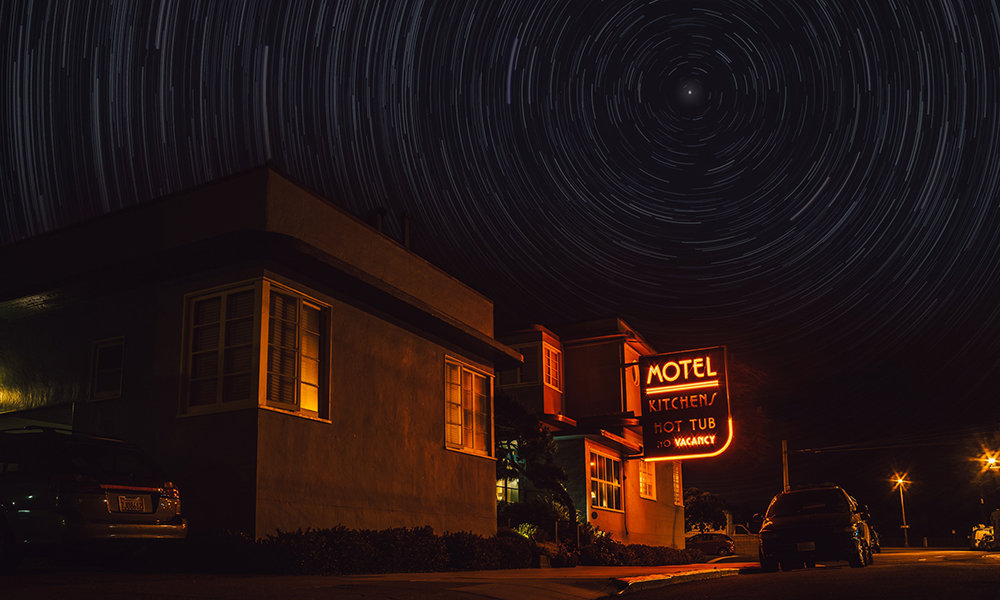

Our issue lead is a fine example of how short speculative fiction doesn't have to travel far to take us far away, and doesn't have to inject grand thrills and spills to keep a reader engaged if everyday characters prove to be quietly engrossing. Amanda Crowley's story doesn't try to hook the reader in with a killer opening line, it just builds and builds towards a simple, moving close. Sometimes we don't notice the powerful moments in life until they've already happened.

Sometimes stories seem to arrive in pairs. Owen Leddy's 'Noise' felt very much like a companion piece to 'Voyager' for a couple of reasons: both deal with strange visitations, real or imagined, and at times both share an air of weariness, as their protagonists struggle with situations — employment, relationships — that could be familiar experiences to us all, were it not for the potential for these events to be very much out of the ordinary.
Another 'first of two' story here, in this case the first of two brief short stories with at least a hint of the apocalyptic to them along with something of an optimistic tone, unusual for that particular genre. In this case, Annie Percik delivers a plucky heroine determined to stay up-beat in the face all of those little adversities that come with keeping an old folks' home running after the entire world has gone completely to pot.
Across the long history of storytelling there recur classic themes — rags-to-riches, star-crossed lovers, revenger's tragedies — and, of course, perhaps the most intriguing, those that make us all wonder what we would do: stories of temptation. In style and setting Mike Adamson echoes such famous examples as Aladdin, but that tale takes place at the start of an event-filled life. This begins at the end of one.
As promised, here we have a counterpart to the chirpy sf puh-pocalypse of 'Freewheeling'. Via another hard-working protagonist, Kurt Hunt's flash fantasy glimpses a moment of cultural and environmental transition that threatens to overturn an entire way of life. An ecological reckoning now seems an inevitable part of all our futures; maybe the extremes the real world will experience are not the same as these, but one way or another they will have to be accepted. Can we too find some positives in what lies ahead?
Charm, personality, the gift of the gab — author Martin Zeigler no doubt has all that and more. And so does his narrator here, but quick thinking and a witty turn of phrase are only the foundation of what makes a winning salesperson. Having a killer product on hand is neither here nor there when it comes to landing your catch: you really need to be able to spin them a yarn…
'Stories about writers' are a hard sell at Mythaxis, but 'stories about storytellers' isn't exactly the same thing. Jonathon Mast's tale touches on timely themes of female oppression and the struggle against patriarchal corruption, starting with a classic (even classical) damsel-in-distress scenario before the old forms begin to shed their skins — and the power that comes from crafting new narratives is at the heart of it all.
Back in 2012, Les Sklaroff had already been contributing quirky pieces to Mythaxis for several years. Issue 11 introduced us to a variety of unusually named persons — Paeony 3rdfield, Dundro Fappit, a collection of rivals negotiating the maze of someone called 'Foroquont' — all denizens of a single, strange, intriguing city, possibly ancient, possibly future. Over the following eight years we've returned to Snoak City numerous times, but the connections between these moments has never been as clear as now.